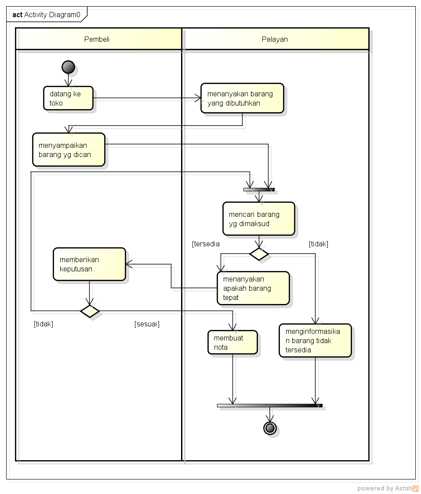

NIM : 1811500007
Nama : Deo P. Shindo
Kel : TI6J
Video Materi : Analisa Masalah, Proses Bisnis Sistem Berjalan, dan Activity Diagram Sistem Berjalan"
Rangkuman
- Activity Diagram
(TIMESTAMP )
- Praktek di Astah & Penjelasan diagram
(TIMESTAMP)
- Penggunaan Join node
(TIMESTAMP)
